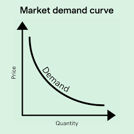
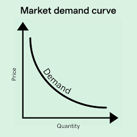

LAPISCIAN | Gamer | Student | Musician
 

Demand
-Dami ng produkto o serbisyo na nais o kayang bilhin ng mga mamimili sa isang partikular na panahon.
-Presyo lamang ang pinaka mahalagang nagtatakda (detrminant) sa dami ng demand.
Batas ng demand
-Mataas ang Presyo=Mababa ang demand
-Mababa ang presyo=Mataas ang demand
Ceteris Paribus
-Presyo lamang ang nakakaapekto sa quality ng demand, ang ibang salik ay constant.
Presyo=independent
Demand=dependent
Substituion Effect
-Kapag tumaas ang presyo hahanap ng alternatibo/pamalit.
income effect
-Tumutukoy sa pagbabago ng demand ukol sa produkto o serbisyo na maaaring sanhi ng pagbabago ng kakayanan sa pagbili ng isang konsyumer dulot ng pagbabago sa kaniyang pinansyal na estado.
Demand schedule
-Talahanayang nagpapakita kung gaano karaming produkto ang nais bilhin ng mga mamimili.
Demand Function
-Matematikal formula ng demand: Equation: (Qd=a-bP)
(QD)= Quantity Demanded, ang halaga nito ay nakasalalay sa mga pagbabago sa presyo
(a)= Autonomous Demand (Dami ng Demand sa Presyong Zero). Ito ang quantity demanded kapag ang presyo (P) ay 0. Sa konteksto ng ekonomiya, kinakatawan nito ang lahat ng di-presyong salik na nakakaapekto sa demand (tulad ng kita, panlasa, at populasyon).
(b)= Slope ng Demand Curve. Ito ay isang negatibong numerong nagpapakita kung gaano kababa ang dami ng demand tuwing tumataas ang presyo. Ito ang sumasalamin sa Law of Demand, na nagsasaad na may baliktad na ugnayan sa pagitan ng presyo at dami ng demand.
(p)= Price (Presyo). Ito ang independent variable sa function.
Demand Curve
-Grapikong representasyon ng batas ng demand.
-Kapag pumunta sa kanan ang linya ito'y tumaas "D1", kapag bumababa ito'y pupunta sa kaliwa "D2".
Salik na nakakaapekto sa Demand/Non-determiminant
Supply
-Dami ng produkto o serbisyo na gustong ibenta ng mga produsyer sa isang takdang presyo at partikular na panahon.
-Presyo lamang ang pinaka mahalagang nagtatakda (detrminant) sa dami ng supply
Batas ng supply
-Mataas ang presyo=Mataas ang supply
-Mababa ang presyo=Mababa ang supply
Supply schedule
-Talahanayang nagpapakita kung gaano karaming produkto ang nais gawin ng mga produsyer.
Supply Function
-Matematikal formula ng supply: Equation: (Qs=c+dP)
(Qs) Quantity Supplied (Dami ng Supply). Ito ang dependent variable, na nagbabago batay sa presyo.dSlope ng Supply Curve. Ito ang positibong numerong nagpapakita kung gaano karami ang pagbabago sa dami ng supply sa bawat pagbabago sa presyo. Ito ay sumasalamin sa positibong ugnayan sa pagitan ng presyo at supply.
(c) Y-intercept (Supply sa Presyong Zero). Ang theoretical quantity supplied kapag ang presyo P ay 0. Sa praktikal na kahulugan, ito ay kumakatawan sa mga di-presyong salik na nakakaimpluwensya sa supply, tulad ng teknolohiya at gastos sa produksyon.
(d) Slope ng Supply Curve Ito ang positibong numerong nagpapakita kung gaano karami ang pagbabago sa dami ng supply sa bawat pagbabago sa presyo. Ito ay sumasalamin sa positibong ugnayan sa pagitan ng presyo at supply.
(P) Price (Presyo). Ito ang independent variable sa function.
supply curve
-Grapikong representasyon ng Batas ng Supply
-Kapag pumunta sa kanan ang linya ito'y tumaas "S1", kapag bumababa ito'y pupunta sa kaliwa "S2".
Salik na nakakaapekto sa Demand/Non-determiminant

Elastisidad
-paraan upang masukat ang pagtugon ng prodyuser at konsyumer sa pagbabago ng presyo
Elastisidad ng demand
-pagsukat ng porsyento ng pagtugon ng mamimili sa pagbabago ng presyo
Elastisidad ng supply
-pagsukat ng porsyento ng pagtugon ng negosyante sa pagbabago ng presyo
Uri ng Elastisidad:
1. Elastik
-Malaki ang bahagdan ng pagtugon sa quantity demand/supply kaysa sa bahagdan ng pagbabago ng presyo E>1
2. Inelastic
-Maliit ang bahagdan ng pagtugon sa quantity demand/supply kaysa sa bahagdan ng pagbabago ng presyo E<1
3. Unitary
-Anumang pagbabago sa presyo ay magdulot ng effinite na pagbabago sa quantity E♾️
4. Ganap na elastik
-Anumang pagbabago sa presyo ay magdulot ng effinite na pagbabago sa quantity E♾️
5. Di Ganap na elastik
-Anumang pagbabago sa quantity demand/supply ay magdulot ng effinite na pagbabago sa price
Fomula ng Elastisidad
-Elastik Presyo= %🔺Q / %🔺P
%🔺Q= Q2 - Q1/Q2 + Q1/2
%🔺P= P2 - P1/P2 + P1/2
Equilibrium
-isang kalagayan na walang sinuman mamimili at nagbili ang gustong baguhin ang kasalukuyang sitwasyon.
-Interaction ng supply & demand
Dis-Equilibrium
-Mataas ang presyo at supply pero mababa ang demand=surplus
-Mababa ang presyo at supply pero mataas ang demand=shortage
Ang pamilihan ay nagangailangan ng:
RA7581 (Price Control)
-Pagtakda ng pamahalaan ng pinakamataas at mababang presyo na maaring itakda.
Price Ceiling
-pinakamataas na presyo itinatakda ngunit mas mababa sa equilibrium
Price SUpport
-Layunin nito ay protektahan ang mga konsumer
Price Floor
-pinakamababang presyo ngunit mas mataas sa equilibrium